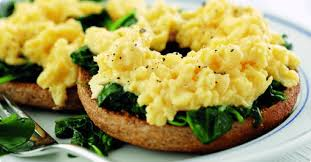

Physical Health
Alcohol and Drug Abuse
Alcohol intake is becoming a problem with teenagers of this generation, its the vast intake of spirits that is the problem.
Spirits are common these days as they are cheap and get you drunk easily, alcohol in moderation doesn’t generally cause problems.
Alcohol intake in long term effects can cause mental illnesses such as depression anxiety and dementia in later years.
It can cause heart problems such as an irregular or rapid heart beat and other serious illnesses.
If you or someone you know is abusing alcohol or drugs, tell someone you can trust and confide in.
First of all, you need to get rid of all temptations in your house. Dispose of all alcohol and drugs available to you before you begin to change.
Keep a diary of all your alcohol and drug intake.
Healthy Eating
It is extremely important to maintain a healthy and balanced diet. I balanced diet with plenty of fruits, vegetables, healthy fats, carbohydrates
and water will not only affect your body physically but also mentally. It will make you feel energised and happy and you will want to go out and do things.
A healthy diet can combat many diseases and mental health issues such as obesity, depression and anxiety.
Remember to eat a balanced diet containing all of the elements of the food pyramid and don’t forget to drink plenty of water!
You will notice your body, skin, hair and concentration improving over a few days of healthy eating.
Try cutting out junk food, in particular, fried food, foods high in processed sugars, salty foods and soft drinks.
It’s important to remember to treat yourself occasionally but just eat these foods in moderation. Below are some helpful meal and snack ideas to help you out:
Breakfast:
Scrambled eggs with whole wheat toast, live yoghurt with honey and low-sugar granola and fresh fruit, fresh smoothie, avocado on whole wheat toast.
Lunch:
Sandwich/wrap with favourite filling, fresh salad with vegetables, pesto and pasta with fresh cherry tomatoes, pitta bread with sliced vegetables and hummus.
Dinner:
Roast dinner, spaghetti bolognese, sausages with potatoes and veg, curry with rice, fajitas with chicken and peppers.
Snacks:
Fresh fruit, toasted mixed nuts, low sugar yogurt, crackers with cheese.

Exercise
Exercise is a very important part of staying healthy. Regular activity will improve your mood, body and productivity.
Exercise delivers oxygen and nutrients to your tissues and helps your cardiovascular system work more efficiently.
And when your heart and lung health improve, you have more energy to tackle daily chores.
Exercise also releases endorphins into your body, instantly improving your mood and making you feel happy.
It can also be a hobby and a passion in many cases. Playing sport as part of a team can improve your relationships with people and is a
great social activity to be part of. Even going for a ten minute walk can reduce stress and boost your mood. Why not join a sports team, go jogging or even try yoga?
Skin Care Routine
Having a consistent and nourishing skin care is important. If your skin is radiant and glowing it will boost your confidence.
When your pores are clogged and congested, your skin doesn’t feel fresh and clean and can lead to acne that can be sore and irritated.
You need to find the right skin care for your skin, whether you have oily, dry, combination or sensitive skin.
- First of all, if you are wearing makeup remove it gently with micellar cleansing water or makeup wipes. Wash your skin thoroughly with cold water.
- Use a facial scrub to remove all of the dead skin on your face and unclog pores. This can also reduce texture.
If you have sensitive skin I would use a very gentle cleanser or just skip this step completely.
Don’t exfoliate your skin more than 3 times a week or you can irritate your skin.
- Cleanse your skin using a gentle cleanser suited to your skin type. This will further remove any dirt/makeup left on your skin.
- (optional) If you have oily skin you can use a toner to help prevent excess oils from being produced in your skin.
- Moisturise your skin. The type of moisturiser you use will be affected by your skin type.
For oily skin, I would recommend a light moisturiser as your skin already produces plenty of oils.
For dry skin you should try a natural oil, such as coconut oil or argan oil. This also works wonders for your hair if applied there instead of conditioner.
- And for the final step remember to drink plenty of water and eat healthily.